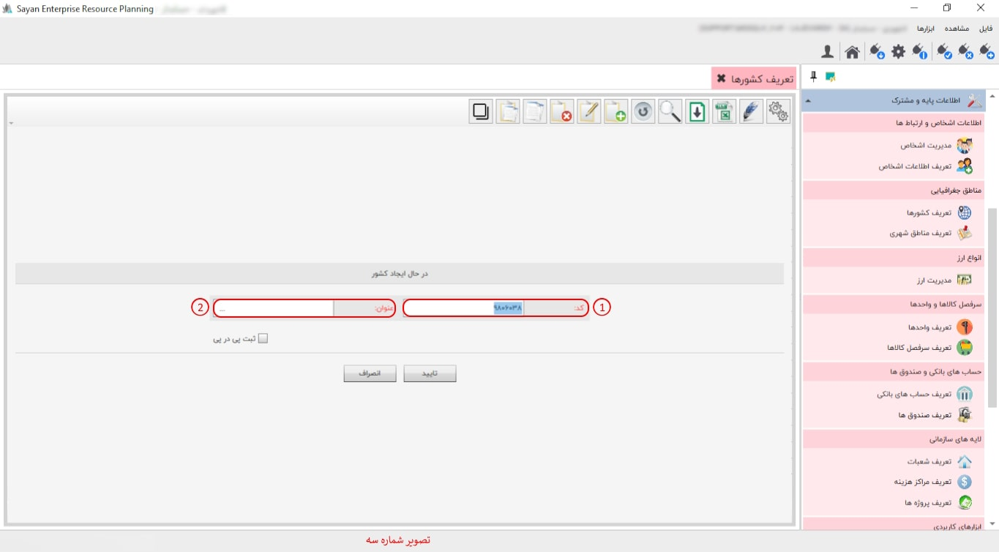

در این قسمت به تعریف کشورها می پردازیم. با کلیک روی گزینه ی تعریف کشور ها صفحه ی زیر باز خواهد شد.

برای ادامه مطلب به تصویر شماره دو مراجعه نمایید.

-کادر شماره یک: در این قسمت پیش تر (شروع کار با راهنما و ابزارهای عمومی) توضیحات لازم داده شده است.
"برای شروع کار با راهنما و ابزارهای عمومی، میتوانید مطالب مربوطه را از طریق لینک زیر مشاهده کنید."
-کادر شماره دوم:در این بخش تمامی کشورهایی که تعریف کرده اید را می توانید مشاهده کنید.
این قسمت، این امکان را به شما می دهد که کشور مد نظر خود را از طریق این آیکون ایجاد نمایید.
برای ادامه مطلب به تصویر شماره سه مراجعه نمایید.
-کد(کادر شماه یک): در این بخش، کد جزء بهصورت پیشفرض برای شما ایجاد میشود. به همین دلیل نیازی به تغییر در کد جزء نیست.
-عنوان(کادر شماره دوم):در این آیتم می توانید کشور مد نظر خود را وارد و تایید نمایید.